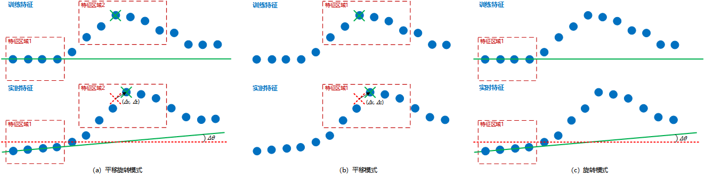

在3D定位中，轮廓定位工具主要通过固定ROI区域中训练轮廓的特征获取参考特征信息（参考特征点和角度信息），然后根据实时轮廓中相同ROI区域内的实时特征信息计算得到二维变换定位结果，以协助后续进行轮廓测量等操作。
| 分类 | 参数名称 | 参数描述 |
|---|---|---|
| 属性窗口 | 定位模式 | 分为3种：平移旋转、平移、旋转。其中，平移模式不考虑旋转、旋转模式不考虑平移 |
| 图像窗口 | 轮廓图像 | 显示待检测的轮廓图像。 |
| 数据链 | 输入轮廓数据 | 显示待检测的轮廓图像。 |
| 特征点 | 平移旋转和平移模式下有效，用于计算参考特征和实时特征的平移关系。 | |
| 特征直线 | 平移旋转和旋转模式下有效，用于计算参考特征和实时特征的旋转关系。 | |
| 高级界面 | 获取训练图像 | 获取到的训练图像为当前输入图像。 |
| 执行训练 | 执行训练是为了获取参考点（或参考角度），参考点为当前该工具链接的特征点参数（参考角度为当前工具连接的特征直线参数的旋转角度）。 | |
| 训练参考特征 | 即参考特征，包含参考点和参考角度信息。 | |
| 实时特征 | 即工具执行时链入的特征，包含实时特征点和实时特征角度信息。 | |
| 定位结果 | 包含平移量和旋转角度信息。 |
| 分类 | 参数名称 | 参数描述 |
|---|---|---|
| 监视窗口 | 输入轮廓数据 | 输入待检测的轮廓图像的轮廓数据，包括轮廓点数，有效点数。 |
| 特征点 | 即实时特征点，为当前工具链入的特征点参数，平移旋转和平移模式下有效。 | |
| 特征直线 | 即实时特征直线，为当前工具链入的特征直线参数，平移旋转和旋转模式下有效。 | |
| 参考点 | 即训练参考特征点，为工具训练时链入的特征点参数，平移旋转和平移模式下有效。 | |
| 参考直线 | 即训练参考特征直线，为工具训练时链入的特征直线参数，平移旋转和旋转模式下有效。 | |
| 二维线性变换 | 二维线性变换是指目标相对于模板的平移、旋转、缩放变换。 | |
| 是否训练 | 表明当前工具是否训练。 | |
| 执行结果 | 工具执行结果。 | |
| 执行时间 | 工具执行时间。 | |
| 图像窗口 | 特征点 | 即实时特征点，同监视窗口的特征点参数。 |
| 特征直线 | 即实时特征直线，同监视窗口的特征直线参数。 | |
| 参考点 | 即训练参考特征点，同监视窗口的参考点参数。 | |
| 参考直线 | 即训练参考特征直线，同监视窗口的参考直线参数。 | |
| 执行结果 | 显示工具执行结果，执行成功显示“OK”，执行失败显示“NG”，同监视窗口的执行结果参数。 | |
| 数据链 | 同监视窗口参数，供后续工具使用。 |
轮廓定位主要是通过训练轮廓数据固定ROI区域中的特征获取参考特征点和参考旋转角度信息，然后根据实时轮廓数据中相同ROI区域内的对应特征信息，计算得到平移量和旋转角度组成的二维变换定位结果，如图2所示。

Step 1 获取训练图像
获取到的训练图像为当前输入图像。
Step 2 训练并执行
训练：训练是为了获取参考点（或参考角度），参考点为当前该工具链接的特征点参数（参考角度为当前工具连接的特征直线参数的旋转角度）。
执行：通过参考点与特征点之间的关系，计算二维线性变换（当前训练执行后，因此时参考点与特征点相同，故平移结果为0，旋转结果为0）。
Step 3 后续执行
后续执行时，参考点（或参考直线）为训练时获取到的特征点参数（或特征直线参数），特征点为当前实时的输入参数，并通过该二者关系计算当前二维线性变换。
特征点和特征直线参数，可来自轮廓位置测量工具和轮廓线圆拟合工具。在获取实时特征参数时，由于没有二维线性变换，故应选择合适ROI，确保可以检测到实时特征点，进而计算轮廓定位工具的二维线性变换。
修改定位模式后，工具一定要重新训练（否则会报工具未训练的错误）
参见“\Samples\3D\深度图\3D测量工具.gvp”。